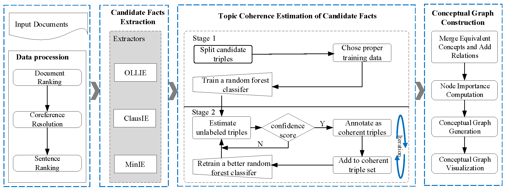

Problem Formulation
Our task is aimed to assist users in quickly finding salient connections and facts from a collection of relevant articles. In summary, it can be best described as a combination of the following subtasks:
Data Preprocessing
| NO. | Tasks |
|---|---|
| 1. |
Document Ranking
|
| 2. |
Coreference Resolution
|
| 3. |
Sentence Ranking
|
Candidate Facts Extraction
| Tasks |
|---|
| More descriptions here |
Topic Coherence Estimation of Candidate Facts
| Two-Stage Candidate Triple Filtering (TCTF) | |
|---|---|
Stage 1. Train a random forest classifier
|
|
Stage 2. Extend Coherent Triple Set
|
Conceptual Graph Generation
| No | Tasks |
|---|---|
| 1. | Merge equivalent concepts and add relations |
| 2. | Computate node importance |
| 3. | Generate a conceptual graph |
| 4 | Visualize the conceptual graph |
The framework of our approach can be shown in Figure 1. It also comprise three major phases in order to address the problems associated with the subtasks as we have discussed earlier.
